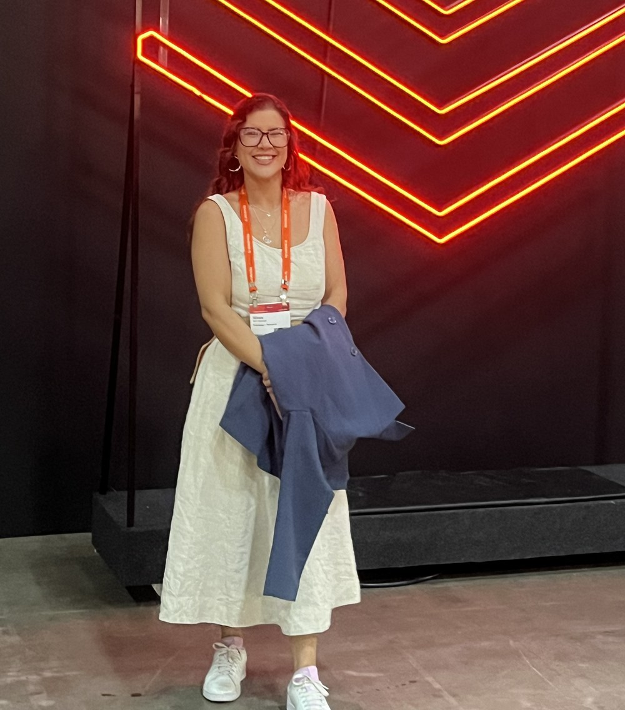
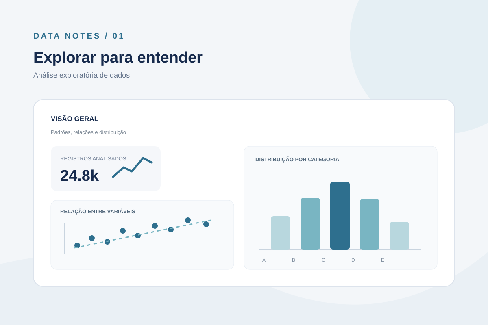
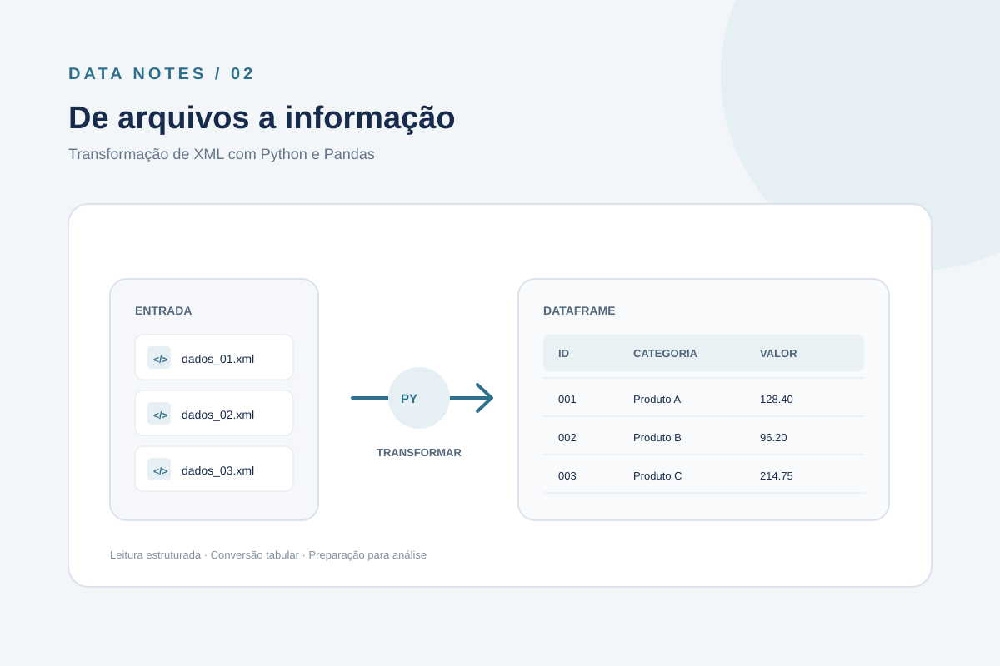
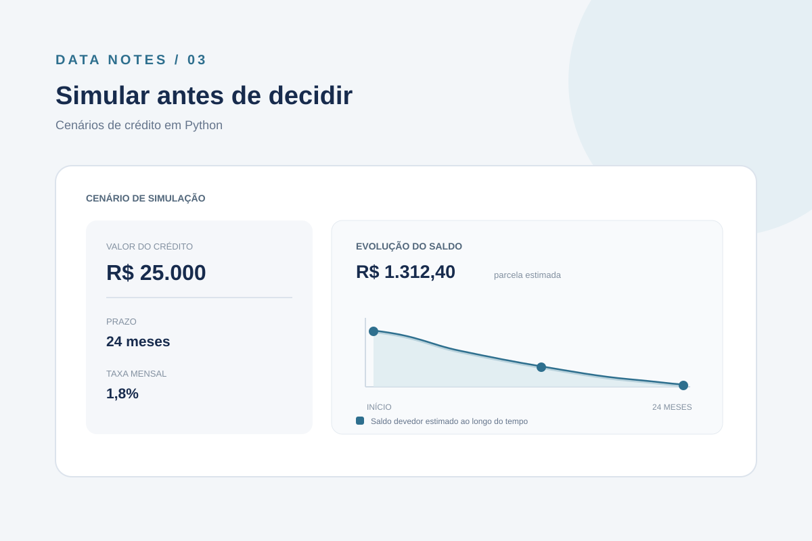
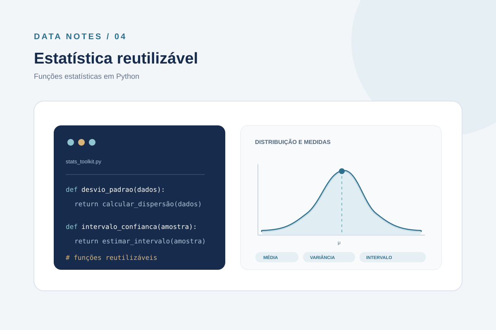

CIENTISTA DE DADOS SÊNIOR · SÃO PAULO, BRASIL
Transformo dados
em decisões melhores.
Sou Nivea Helena Dantas. Ajudo empresas a tomar decisões de negócio com mais clareza, usando análises, modelos preditivos e soluções de dados.
Resultados com propósito.

em movimento
que vira impacto
Uma trajetória entre negócio
e tecnologia.
Sou internacionalista de formação e cientista de dados por vocação.
Comecei minha carreira como analista de dados na Allmaria, uma startup em que desenvolvi soluções para apoiar as áreas de marketing, produto e vendas.
Depois, ingressei na PRODESP como Cientista de Dados atuando na Superintendencia da Educação na SEDUC. Foi lá meu primeiro contato com Big Data e Cloud, além de conquistar minhas primeiras certificações: AZ-900 e DP-900. Também, consolidei minha experiência em bancos de dados SQL e NoSQL, data lakes, migrações, pipelines, ETLs, data warehouses, arquiteturas, bibliotecas de dados e análises estatísticas. E também, foi na PRODESP que participei do meu primeiro projeto de dados públicos para a sociedade. O portal da transparencia da Educação.
Mais tarde, no iFood, ampliei minha atuação em dados para o setor financeiro, mais precisamente em antecipação de recebíveis, trabalhando com conciliação, mineração, modelagem de dados, monitoramento, alertas, consolidação de métricas estratégicas para tomadas de decisão, análises de grafos, exploratórias, diagnósticas preditivas e prescritivas.
Reduzi erros de operações da antecipação em 80% em 2 meses, aumentei confiabilidade de informação dos dados de antecipação e criei novas tabelas estratégicas para consolidação de descontos, utilizando uma técnica moderna de modelagem que vai além da Arquitetura Medalion.
Por uma escolha alinhada ao meu propósito pessoal, retornei à Prodesp. Hoje, trabalho mais focada na área de Engenharia de Dados mas com forte background em modelagem e mineração. Atuo em projetos estratégicos da SEDUC para tomadas de decisão da Educação Paulista, e também com FinOps, governança, monitoramentos e alertas para ambientes Databricks. Dando vida à tabelas, modelos e dashboards estratégicos que faciclitaram a vida dos tomadores de decisão, e principalmente, aliviando o peso para resolver problemas complexos.
Levo comigo as experiências que construí em diferentes contextos e a vontade de contribuir com projetos de dados relevantes para a sociedade. Gosto de transformar problemas em perguntas que possam ser investigadas com dados.
É essa combinação de análise, tecnologia e impacto que me motiva a seguir evoluindo na área.
Allmaria
Prodesp
iFood
TECNOLOGIAS E PRÁTICAS
Meu repertório
em dados.
Ferramentas e conhecimentos que uso para construir, organizar e analisar soluções de dados.
Engenharia & Arquitetura
Data Vault · Data Product · Data Mesh · Medallion · Data Lake · Lakehouse · Data Mart · Data Warehouse · ETL/ELT · Migrações · OLTP/OLAP · Modelagem · Pipelines
Streaming
Kafka · Zero Bus
Bancos de dados
MySQL · Postgres · SQL Server · MongoDB · Dataverse · XML
Análise & modelagem
Estatística · Machine Learning · Power BI · ThoughtSpot · Google Data Studio
Governança
FinOps · Lineage · Monitoramento · Alertas · Data Quality
Cloud & plataformas de dados
Databricks · Azure · AWS · GCP
Linguagens & ferramentas
SQL · Python · Scala · Spark · R · Shell Script · HTML · CSS · JavaScript · Git · Docker
Manipulação de arquivos
JSON · Avro · Parquet · CSV · PDF
DA PERGUNTA À SOLUÇÃO
Projetos que mostram
como eu penso.
Uma seleção de estudos e ferramentas. Cada repositório traz o contexto e os detalhes técnicos.

01 ↗Análise exploratória de dados
Investigação de dados para encontrar padrões, responder perguntas e apoiar decisões.

02 ↗Transformação de XML
Conversão de arquivos XML para estruturas tabulares com Pandas.

03 ↗Simulador de crédito
Uma ferramenta para explorar cenários de crédito e visualizar resultados.

04 ↗Funções estatísticas
Funções reutilizáveis para apoiar análises e cálculos estatísticos em Python.
Os projetos pessoais usam dados públicos ou sintéticos para fins de estudo. Ver todos no GitHub ↗